X3310–X3414¶
Incircle Transforms T(U), Trigonometric Offset Points & Kiepert Cusps
X3310–X3414 (Incircle Transforms T(U), Trigonometric Offset Points & Kiepert Cusps) — 16 representative centers (from 105 in collection) constructed on acute reference triangle \((a, b, c) = (5, 6, 7)\) with unit baseline AB = \(1\).¶
Group Preamble — Barycentric Products of Perpendicular Directions
Suppose P and U are points on the line at infinity, given in barycentric coordinates by P =\(p : q : r\) and U =\(u : v : w\). We call P and U perpendicular directions if for every point X not in the line at infinity, the lines XP and XU are perpendicular. (It is well known that if P and U are an antipodal pair on the circumcircle, then their isogonal conjugates are perpendicular directions.)
Theorem: If P and U are perpendicular directions, then their barycentric product lies on the orthic axis.
An outline of a proof follows. For given P on the line at infinity, the direction perpendicular to P is given by
and the barycentric product P*U is the point \(x : y : z\) given by
ap/\(d_{1}\) : bq/\(d_{2}\) : cr/\(d_{3}\).
For P to lie on the line at infinity means that r = - p - q. Substitution for r, a computer quickly shows that
x cot A + y cot B + z cot C = 0,
as desired.
The orthic axis is perpendicular to the Euler line. For this and other properties, visit MathWorld. The appearance of (I, J, K) in the following list means that X(K) is the barycentric product of perpendicular directions Xi and Xj.
Group Preamble — Points on the Incircle (Incircle transforms)
Suppose that U =\(u : v : w\) (trilinears) is a point other than the symmedian point, X6. Then the incircle transform of :g:`U <U*>` is the point.
T(U) = a (a - b + c) (a + b - c) (c v - b w)^2 : : ,
which lies on the incircle. Geometrically, T(U) is the Brisse transform of the psi transform of X6 and U. (Brisse transform is described just before X1254, and psi transform, also called the “Psi mapping” elsewhere in ETC, and TCCT, p. 80, is defined in the preamble just before X98.
X3310BARYCENTRIC PRODUCT X513*X517
X3311INTERSECTION OF LINES X3X_6 AND X4X_1131
X3312INTERSECTION OF LINES X3X_6 AND X4X_1132
X3313INTERSECTION OF LINES X3X_6 AND X66X_69
X3314INTERSECTION OF LINES X2X_6 AND X76X_115
X3315INTERSECTION OF LINES X1X_88 AND X105X_110
X3316ISOGONAL CONJUGATE OF X3311
X3317ISOGONAL CONJUGATE OF X3312
X3318INCIRCLE TRANSFORM T(X603)
X3319INCIRCLE TRANSFORM T(X654)
X3320INCIRCLE TRANSFORM T(X656)
X3321INCIRCLE TRANSFORM T(X663)
X3322INCIRCLE TRANSFORM T(X665)
X3323INCIRCLE TRANSFORM T(X692)
X3324INCIRCLE TRANSFORM T(X822)
X3325INCIRCLE TRANSFORM T(X896)
X3326INCIRCLE TRANSFORM T(X909)
X3327INCIRCLE TRANSFORM T(X2290)
X3327 lies on the incircle.
X3328INCIRCLE TRANSFORM T(X2291)
X3329INTERSECTION OF LINES X2X_6 AND X39X_83
X3330INTERSECTION OF LINES X4X_6 AND X44X_513
X3331INTERSECTION OF LINES X4X_6 AND X187X_237
X3332INTERSECTION OF LINES X1X_7 AND X4X_6
X3333POHOATA POINT
X3334PERSPECTOR OF TRIANGLES T1T2T3 AND J1J2J3
X3335PERSPECTOR OF TRIANGLES N1N2N3 AND J1J2J3
X3336INTERSECTION OF LINES X1X_3 AND X7X_498
X3338INTERSECTION OF LINES X1X_3 AND X7X_90
X3339INTERSECTION OF LINES X1X_3 AND X7X_10
X3340INTERSECTION OF LINES X1X_3 AND X7X_145
X3341-CEVA CONJUGATE OF X282
X3342ISOGONAL CONJUGATE OF X3341
X3343-CEVA CONJUGATE OF X1073
X3344ISOGONAL CONJUGATE OF X3343
X3345ISOGONAL CONJUGATE OF X1490
X3346ISOGONAL CONJUGATE OF X1498
X3347ISOGONAL CONJUGATE OF X3182
X3348ISOGONAL CONJUGATE OF X3183
X3349INTERSECTION OF LINES X3X_2130 AND X4X_2131
X3350INTERSECTION OF LINES X3X_2131 AND X4X_1073
X3351-CEVA CONJUGATE OF X3342
X3352ISOGONAL CONJUGATE OF X3351
X3353-CEVA CONJUGATE OF X84
X3354ISOGONAL CONJUGATE OF X3353
X3355REFLECTION OF X2131 IN X3
X3356-CROSS CONJUGATE OF X3350
X3357MIDPOINT OF X3 AND X64
X3358MIDPOINT OF X9 AND X84
X3359MIDPOINT OF X2096 AND X3421
X3360SS(a → bc) OF X20
X3361INTERSECTION OF LINES X1X_3 AND X7X_1125
X3362ISOGONAL CONJUGATE OF X1745
X3363OF PEDAL TRIANGLE OF X2
X3364COS(A - 5π/12) POINT
X3364 and related points occupy Bernard Gibert’s Table 38 concerning these three loci: Brocard axis, Kiepert hyperbola, and the cubic K457. Trilinear equations for these curves, of degrees 1,2,3, respectively, in the variables a,b,c, are given as follows:
Curve Trilinears Brocard axis \(\cos(A + t) : \cos(B + t) : \cos(C + t)\) Kiepert hyperbola \(\sec(A + t) : \sec(B + t) : \sec(C + t)\) K457 \(\tan(A + t) : \tan(B + t) : \tan(C + t)\)
X3365SIN(A - 5π/12) POINT
X3366SEC(A - 5π/12) POINT
X3367CSC(A - 5π/12) POINT
X3368COS(A - 2π/5) POINT
X3369SIN(A - 2π/5) POINT
X3370SEC(A - 2π/5) POINT
X3371COS(A - 3π/8) POINT

X3372SIN(A - 3π/8) POINT

X3373SEC(A - 3π/8) POINT
